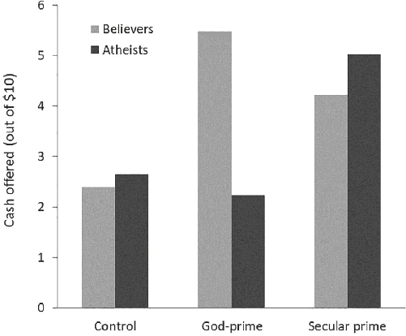
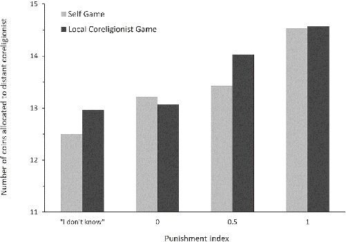

It will also be seen by those who pay attention to Roman history, how much religion helped in the control of armies, in encouraging plebs, in producing good men, and in shaming the bad … And truly there never was any extraordinary institutor of laws among a people who did not have recourse to God, because otherwise he would not have been accepted.
—Niccolò Machiavelli (1531), Discourses on Livy, Book 1, Chapter 11
Upon entering a psychology laboratory in Vancouver, Canada, participants were asked to first complete a sentence-unscrambling task and then to make an economic decision about how to allocate $10 between themselves and a stranger. For the unscrambling task, people were randomly assigned to either a set of 10 sentences that were secretly laced with five God-related words or a control group in which none of the words were divinely flavored.1 Try creating a sentence from these words:
divine dessert the was = _______________________________
(answer: “the dessert was divine”)
After completing this task, each person was assigned an anonymous partner for a onetime interaction. Their job was to decide how to divide $10 between themselves and this other person. In this, the Dictator Game, most WEIRD people agree that participants should give half the money to the recipient. Of course, purely selfish individuals will keep all $10 for themselves.
This two-stage experimental design, first developed by the psychologists Ara Norenzayan and Azim Shariff, asks a simple question: Do unconscious reminders of God influence people’s willingness to comply with norms of impersonal fairness?
Yes, they do. In the control task—with no reminders of God—participants gave the stranger only $2.60 on average of the $10. The most common amount given here was zero dollars: nothing for the stranger. By contrast, when unconsciously reminded of God, participants suddenly became more generous, increasing their average allocation to $4.60; here, the most common single amount given was half the money, $5. The percentage of participants who gave nothing to the stranger dropped from 40 percent in the control task to only 12 percent among those reminded of God.2
Now, experiments involving such unconscious reminders, which psychologists call “primes,” are notoriously delicate, because the primes need to be strong enough to be psychologically detectable by participants but not so strong that they bubble up into conscious awareness. Fortunately, Ara and Azim’s experiments made a big splash, so we now have many such experiments using different approaches to measure prosocial norm compliance. Compiling all of the “God-priming” studies they could find—26 in total from many different laboratories and populations—Azim, Ara, and their collaborators found that participants reminded of God not only give more equal offers in Dictator Games but also cheat less on tests and cooperate more with strangers in group projects. Of course, not every study showed these effects; but across all the studies, the effects of God-primes came through loud and clear.3
What exactly is going on here? Maybe WEIRD people associate religion with Christianity and Christianity with charity, so the God-primes cause an unconscious association with charity that results in people giving more. Alternatively, maybe religious people are intuitively worried that God will see them violating some norm about cooperation or fairness and count it against them in some heavenly tally—that is, maybe believers have an implicit inclination to comply with moralized norms out of an internalized fear of divine judgment.
Which explanation is correct, if either? Our first piece of evidence comes from analyses of the religious commitments of the participants across the priming studies. When Ara and Azim’s team looked at nonreligious people, the effect of priming God on social behavior went to zero. That is, God-primes don’t work on atheists. By contrast, when nonbelievers were dropped from the analysis, the effects of priming God got stronger. The same pattern emerges when all 26 studies are analyzed together. It turns out the nonbelievers were diluting the potency of God’s influence.
But, maybe atheists are a bit hardheaded, and thus difficult to influence with priming?
Ara and Azim also looked at the impact of “secular primes” by creating a sentence-unscrambling task involving words like “police,” “court,” and “jury.” Figure 4.1 shows their results: secular primes elevate Dictator Game allocations for both religious people and atheists, while God-primes only work on believers. Notably, in the control group, there was no difference between believers and atheists. It seems that atheists are only resistant to the influence of primes when they cue supernatural beings that the atheists believe don’t exist.

This indicates that the impact of God-primes depends on people’s supernatural commitments and not on vague secondary associations between “religion” and concepts like charity, which would be held by atheists and believers alike. Such religious faith should be especially important in expanding the sphere of cooperation in places that lack the well-functioning courts, governments, and police forces found in Vancouver—that is, it would have been particularly important in most places throughout human history.
The “priming” approach used in the above experiments represents a methodological technique that helps researchers figure out what causes what, psychologically. Of course, being much smarter than we are, cultural evolution figured out the power of priming long ago and has embedded God-primes into daily life in all of the world’s major religions. Religious dress (Jewish kippahs), adornments (Catholic crosses), holy days, daily devotions, and temples on the market square all remind people of their gods and religious commitments. To see such primes in action, let’s head into the medina of Marrakesh, in Morocco. Inside the old city walls, among the maze-like streets, Muslim shopkeepers played a modified Dictator Game. Here, the Muslim call to prayer sounds five times per day for 5 to 10 minutes from minarets around the city. That’s our prime. In the experiment, 69 shopkeepers chose from among three ways to allocate the local currency—dirhams—between themselves and a charity. They could: (A) keep 20 dirhams for themselves and give 0 to charity; (B) keep 10 for themselves and give 30 to charity; or (C) take nothing and give 60 to charity. Twenty dirhams was about enough money to buy lunch or take a 15-minute taxi ride. The experiment was administered either during the call to prayer or between calls.5
Here’s the key question: Did hearing the call to prayer in the background while considering their choice in this experiment influence these small business owners?
You bet. During the call to prayer, 100 percent of shopkeepers gave all of the money to charity (choice C). At other times, the percentage of participants giving it all to charity dropped to 59 percent. This is surprising, because these shopkeepers earn a living by hawking goods like dried fruits, local crafts, and handwoven rugs, and spend their days haggling over much smaller sums. Nevertheless, although they routinely hear the call, it still influences their behavior in significant ways.6
Such embedded primes influence Christians as well, creating the Sunday effect. In a study conducted over two months, Christians were more likely to participate in charitable efforts via email on Sundays (with some spillover into Mondays) than on other days of the week. By Saturday, the charitable inclinations of Christians hit their weekly low, and were not distinguishable from those of nonreligious people. But, then Sunday came, and many Christians got a ritualized booster shot that elevated their charitable inclinations. Unlike the faithful, nonreligious people reveal no such weekly cycle.
The Sunday effect also shows up in the use of online pornography across U.S. states. While on average there’s little variation across states in porn usage, states with more religious populations reveal a weekly cycle that tracks the charity patterns above. People from more religious states apparently watch less porn on Sundays, but then compensate for this “porn deficit” by watching more over the rest of the week. These results are predictable, since the Christian God is famously obsessed with both charity and sex—i.e., not having it or even thinking about it.7
By giving us a glimpse into the subtle power of religion in our daily decision-making, studies like these uncover the psychological footprints left by cultural evolution. They reveal how, operating outside of our conscious awareness, supernatural beliefs and ritual practices can motivate the faithful to make personally costly decisions, treat strangers more fairly, and contribute to public goods like charities (and avoid porn).
Now, if you are WEIRD, you may think that religion always involves morally concerned gods who exhort people to behave properly, perhaps with threats to their soul in the next life. However, the character of gods, afterlives, rituals, and universal morality common to today’s world religions is unusual, the product of long-running cultural evolutionary processes. To explore this, we’ll venture back into the fog of prehistory to see how and why cultural evolution has shaped humanity’s supernatural beliefs, rituals, and related institutions in ways that helped societies to scale up or hold together. Religions have fostered trade by increasing trust, legitimized political authority, and expanded people’s conceptions of their communities by shifting their focus from their own clans or tribes to larger imagined communities like “all Muslims.” This background will set the stage for understanding how the Western Christian Church of the Middle Ages shaped European families, cultural psychology, and communities in ways that opened a pathway to the political, economic, and social institutions of the modern world.
To explain the evolution of supernatural beliefs and rituals, we need to consider three key ingredients: (1) our species’ willingness to put faith in what we learn from others over our own direct experiences and intuitions, (2) the existence of “psychological by-products” from the kludgy evolution of our brains, and (3) the impact of intergroup competition on cultural evolution. The first ingredient, discussed in Chapter 2, arose in response to the power of cumulative cultural evolution to generate subtle but highly adaptive packages of nonintuitive beliefs and practices, like the use of pathogen-killing spices in culinary recipes. Because of these complex adaptive products, natural selection has often favored relying on cultural learning over other sources of information, especially when uncertainty was high and getting the right answer was important. The possible existence of supernatural beings, hidden powers, and parallel worlds represents precisely the sort of high-stakes but uncertain situations in which our cultural learning abilities often overrule our mundane intuitions and common experience in favor of our learning from others. Our evolved inclinations to rely heavily on cultural learning (at least under some circumstances) create a kind of “faith instinct” that opens the door to religion, making us susceptible to ideas and beliefs that violate our worldly expectations.
However, although our faith instinct does crack the door open, different supernatural beliefs and practices still need to compete to occupy our minds. In this competition, the advantage often goes to those beliefs or practices that most effectively penetrate our mental defenses—defenses that aim to filter out dangerous, implausible, or otherwise useless cultural junk. This is the second ingredient: cultural evolution will seek out back doors into our minds by locating glitches in our psychological firewalls. To see what I mean, consider one of the by-products of our sophisticated mentalizing abilities. These crucial abilities likely evolved as a key psychological adaptation in our species for more efficiently learning the accumulating bodies of cultural information related to tools, norms, and languages. They allow us to represent the goals, beliefs, and desires of other minds; but—here’s the back door—they also allow us to represent the minds of nonexistent beings, like gods, aliens, and spirits, as well as Santa Claus and the tooth fairy.8
In fact, mentally representing the mind of a being that one never observes, or actually interacts with, may require particularly potent mentalizing abilities. This suggests that not only do our mentalizing abilities allow us to think about supernatural beings, but that those with superior mentalizing abilities may be more inclined to believe in gods, ghosts, and spirits because they are better at conjuring the richness of their minds. One piece of evidence for this idea is that Americans, Czechs, and Slovaks with better mentalizing abilities and greater empathy are more likely than others to believe in God. The impact of mentalizing accounts for the common observation from global surveys that women are more likely to believe in God than men. Across societies, women are better than men at mentalizing and empathy. Once we adjust for men’s inferior abilities, women and men don’t differ in their belief in God or other supernatural agents. Women’s greater religious faith in many populations may be a by-product of their superior capacity for empathy.9
The evolution of our potent mentalizing abilities may also account for our species’ tendency toward dualism—thinking of minds and bodies as separable and potentially independent. Dualistic inclinations leave us susceptible to beliefs in ghosts, spirits, and an afterlife in which your body goes in the ground and your soul departs for heaven. Of course, the best available science says that our minds are produced entirely by our bodies and brains, so they can’t have an independent existence. Nevertheless, in the process of hot-wiring our brains, natural selection inadvertently created a cognitive glitch—another back door into our minds—that left us susceptible to believing that minds and bodies are separable. This probably occurred because our sophisticated mentalizing abilities for understanding other minds evolved relatively recently, long after the evolution of an ancient cognitive system for tracking the movements of other bodies, which we share with many other species. The disjointed evolution of these semi-independent mental systems produced a cognitive by-product, a capacity to entertain the notion that “minds” can separate from bodies.
If an omniscient engineer had crafted an integrated cognitive system for us, she certainly would have ruled out mind-body separations, since they are impossible. Dualistic conceptions like souls or ghosts should make about as much sense to us as a person who exists only on Tuesdays and Thursdays. Instead, stories about mind-body switches are easy to understand, even for young children in societies as diverse as Fiji and Canada. The popularity of movies portraying mind-body switches, like Freaky Friday, along with widespread cultural phenomena like demonic possessions and séances, testify to the readiness of our dualistic intuitions.10
To see the impact of cognitive bugs like dualism, consider how diverse beliefs compete to insinuate themselves into our minds and societies by getting repeatedly remembered, recalled, and retransmitted over generations. Many ideas will be too bizarre, complex, or counterintuitive to survive this competition, and will be systematically forgotten, misremembered, or otherwise mutated in ways that make them more amenable to our psychology.11 The survivors will be those that best fit the quirks of our jury-rigged brains without violating our intuitions too drastically. This process helps explain the striking cross-cultural uniformities in people’s beliefs about souls and ghosts, which seem to flow directly from our dualistic glitches. In the United States, for example, nearly half of adults believe in ghosts, and these beliefs persist despite consistent and long-running efforts by both scientific and religious organizations to dissuade people from such beliefs.12
These two ingredients—our faith instinct and cognitive bugs—help account for many of the supernatural beings found among mobile hunter-gatherers and presumably our Stone Age ancestors. The gods of hunter-gatherers tended to be weak, whimsical, and not particularly moral. They could be bribed, tricked, or scared off with powerful rituals. Among the Aboriginal hunter-gatherers of Japan, for example, people bribed the gods with offerings of millet beer. If things didn’t improve, they’d threaten to cut the god off from his beer supply. Sometimes such gods did punish people with their supernatural powers, but this was usually because of some divine pet peeve rather than a moral conviction. In the Bay of Bengal, for example, the Andaman Islanders’ storm god would rage against anyone who melted beeswax during the cicadas’ songs. The islanders thought that melting beeswax was perfectly fine, and would sometimes do it anyway, but only if they thought the storm god couldn’t see them. Even in rare cases when the gods did punish people for violating widely shared social norms, this usually involved an arbitrary taboo rather than something like murder, theft, adultery, or deception.13 Although hunter-gatherers often believed in some form of afterlife, there was rarely any connection between proper behavior in this life—e.g., not stealing food—and the quality of one’s afterlife.14
Of course, the smallest-scale human communities did, and still do, possess strong moral norms about how to treat other community members. The key difference is that these prescriptions and prohibitions are not strongly linked to universal cosmic forces or the commandments of mighty supernatural beings. For example, in discussing the Ju/'hoansi’s creator god, ≠Gao!na (the “≠” and “!” represent click sounds), Lorna Marshall writes: “Man’s wrong-doing against man is not left to ≠Gao!na’s punishment nor is it considered to be his concern. Man corrects or avenges such wrong-doings himself in his social context. ≠Gao!na punishes people for his own reasons, which are sometimes quite obscure.”
Marshall goes on to recount one story in which ≠Gao!na makes two men sick because they had burned some bees while using smoke to drive them away—it’s apparently well-known that ≠Gao!na hates it when people burn bees. In terms of both their powers and morality, the gods of the smallest-scale human societies are much more like people than the later gods of larger-scale societies. That is, sometimes these gods are indeed morally concerned, but usually their concerns are local, even idiosyncratic, while their interventions are generally unreliable and ineffective.15
A fundamental question is: How did these weak, whimsical, and often morally ambiguous gods ever evolve into the big, powerful moralizers of modern religions? How did morality ever get all tied up with supernatural beings, universal justice, and the afterlife?
Enter our third ingredient: the influence of intergroup competition on the evolution of religious beliefs and rituals. Suppose some communities happened—by chance—to have gods or ancestor spirits that punished people for refusing to share food or for running away in the face of enemy raiders. Suppose still other communities came to share a belief in gods who punished people for breaking sacred oaths taken during key transactions, such as when trading valuable goods or affirming peace treaties. Over time, intergroup competition can gradually filter, aggregate, and recombine such diverse supernatural beliefs. If it’s sufficiently intense, intergroup competition can assemble integrated cultural packages that include gods, rituals, afterlife conceptions, and social institutions that together expand the sphere of trust, intensify people’s willingness to sacrifice in war, and sustain internal harmony by reducing assault, murder, adultery, and other crimes within groups.
We’ve already seen this process at work in Ilahita. There, a set of psychologically potent communal rituals did much of the work, but the actions and desires of the Tambaran gods also played a role. These village gods imposed the ritual-group system and demanded ritual observances. It was also believed that they punished those who failed in their ritual obligations, which may have motivated greater ritual adherence. Ilahita’s combination of gods, rituals, and social organization allowed the community to scale up from a few hundred to a few thousand people. This case, however, also illustrates the limitations of relying primarily on the solidarity-building powers of communal rituals. Ilahita’s powerful rituals, as well as those widely used in other small-scale societies, do forge potent social bonds, but their effectiveness is constrained by the need for individuals to interact with each other face-to-face. To scale up further, to construct and sustain complex chiefdoms and states, cultural evolution needed to somehow fashion imagined communities—broad networks of strangers connected by shared beliefs in supernatural beings, mystical forces like karma, or other worlds such as heaven and hell. How would intergroup competition have shaped people’s beliefs about their gods?
One of the primary ways that cultural evolution has managed to turn our cognitive bugs into potent social technologies has been by favoring deep commitments to supernatural beings who punish believers for violating social norms that are beneficial to the community. If people believe that their gods will punish them for things like stealing, adultery, cheating, or murder, then they will be less likely to commit these actions even when they could get away with them. Communities devoted to such gods are more likely to prosper, expand, spread, and provide models for other communities to copy. They are also less likely to collapse or disintegrate. Under these conditions, we should expect gods to evolve specific kinds of concerns about human actions and greater powers to both monitor adherents and punish or reward proper behavior. Let’s take a deeper look at each of these.
Concerns about human action: Under the pressure of intergroup competition, gods should become increasingly concerned about those aspects of behavior that promote cooperation and harmony within groups. This includes any divine commands or prohibitions that expand the sphere of cooperation and trust. Gods should focus on those aspects of social interactions where cooperation and trust are difficult but potentially most beneficial for the community. This will often favor divine concerns about the treatment of socially distant coreligionists, and focus on acts like stealing, lying, cheating, and murder. In scaling up, societies can stretch the sphere of trust to include strangers from other clans or tribes when they too believe in a god who tends to the faithful. Gods should also worry about adultery, for two reasons: (1) sexual jealousy is a major source of social disharmony, violence, and murder (even between neighbors and relatives), and (2) the uncertainty about paternity created by adultery suppresses fatherly investments in children. Curbing adultery should both foster greater harmony within larger communities and improve the welfare of children. Below, we’ll see why the gods should also be concerned about ritual performances, devotional adherence (e.g., to food taboos), and costly sacrifices.16
Divine monitoring: Intergroup competition should favor gods who are better at monitoring people’s adherence to divine demands and prohibitions. Supernatural beings seem to first emerge with roughly human abilities for monitoring others, but then over millennia some became omniscient, eventually even gaining the ability to see into people’s hearts and minds. Where I work in Fiji, the ancestor gods watch villagers from “dark places,” but they can’t watch everyone at the same time, track people when they travel to other islands, or see into people’s hearts. By contrast, the villagers have no doubt that the Christian God, whom they also believe in, can do all this and more.
Supernatural sticks and carrots: Intergroup competition selects for gods with the power to punish and reward individuals and groups. Notably, because of how our norm psychology operates, punishment threats may be substantially more potent than rewards, but both can play a role in motivating behavior. Over time, the gods evolved from peevish pranksters to divine judges capable of inflicting injuries, illness, and even death. Eventually, some gods seized control over the afterlife, acquiring the power to dispense everlasting life or eternal damnation.
Does believing in a god who is more willing and able to monitor and punish norm violations actually influence people’s decision-making? Can such gods “expand the circle” of cooperation by fostering fair and impartial interactions with strangers who share their faith? We’ve already seen that God-primes evoke more prosociality toward strangers; now, let’s zero in on some of the specific channels through which belief operates.
About a dozen years ago, over a few pints in our local pub, Ara Norenzayan, the religious studies scholar Ted Slingerland, and I designed a project to study the evolution of religions. As part of this, we assembled an international team with expertise in diverse populations of hunter-gatherers, subsistence farmers, cattle herders, and wage laborers from communities around the globe, from Siberia and Mauritius to Vanuatu and Fiji. Across these 15 populations, we tapped not only communities deeply enmeshed in world religions like Hinduism, Christianity, and Buddhism but also those actively participating in local traditions, including ancestor worship and animism (e.g., belief in mountain spirits). In each population, we conducted extensive anthropological interviews about people’s supernatural beliefs and administered a set of decision-making tasks in which participants had to allocate substantial sums of real money.17
To begin our study, we first located two locally important gods at each field site. The first was the deity who best approximated the biggest and most powerful god possible—the omnipotent, omnipresent, and all-benevolent GOD. This is our “Big God.” Then we looked for an important but less powerful supernatural agent, which we called our “Local God.” For each god, we asked participants to rate their abilities to surveil mortals, read their minds, punish various violations, and grant an afterlife (among many other questions). From these ratings, we developed indices for each god that measured people’s belief in that god’s power to monitor and punish norm-violators.
To measure people’s notions of fairness and impartiality, we used a decision task called the Random Allocation Game (RAG). In the RAG, each participant was seated in a private area—like a room or tent. In front of each were two cups, a pile of 30 coins, and a six-sided die colored black on three sides and white on the other three. Participants were told that they had to roll the die to allocate each coin to one of the two cups. The cash put into each cup was earmarked for a different recipient at the end of the game. In the most important versions of this setup, participants allocated the coins to (1) an anonymous coreligionist from a distant town or village and either (2A) themselves (Self Game) or (2B) another coreligionist from the participant’s home community (Local Coreligionist Game). Once players’ understanding of the game was verified, they were left alone to allocate the coins.18
Since we were interested in the effects of people’s beliefs in supernatural surveillance, and not about the influence of earthly social pressures, participants were instructed to allocate the coins in the following manner: (1) pick one of the two cups in your mind; (2) roll the die and if one of the black-colored sides comes up, put the coin in the cup you picked in your mind; but if one of the white sides comes up, place the coin in the other cup, the one you didn’t pick in your mind; (3) repeat this until you run out of coins.
This protocol ensures secrecy since, short of mind reading, no one can be sure which cup a player mentally selected on a given roll. Even if someone like the experimenter was spying on them, there’s simply no way to tell if they actually cheated. Of course, while we experimenters can’t be positive whether someone cheated on any specific die roll, we do have probability and statistics, which permits us to infer the amount of bias in people’s allocations. On average, after 30 die rolls, there should be 15 coins in each cup. The further a person’s allocations are from 15 per cup, the more likely they are to be biased in some way. Now, we expect people to be biased toward both themselves and members of their local communities. So, the question is whether Big Gods, through their monitoring and threat of punishment, can reduce this natural selfishness and parochialism by moving people closer to an equal split (15 coins on average for the distant coreligionist).
We found that Big Gods can indeed expand the circle and that this is influenced by people’s beliefs about (1) divine monitoring and (2) supernatural punishing power. For example, when people believed that their Big God was more willing and able to punish bad behavior, they were less biased against distant coreligionists. Figure 4.2 plots our index of God’s punishing power for both allocation tasks. Keeping in mind that a perfectly unbiased person will allocate 15 coins on average, the data show that people who thought their Big God was the fire-and-brimstone type (index=“1”) allocated an average of 14.5 coins to a distant coreligionist. Meanwhile, people who thought that their Big God was an all-loving softy (index=“0”) allocated only about 13 coins to the stranger.
Figure 4.2 includes, on the far left, people who said they “don’t know” about their god’s powers. These agnostics came almost exclusively from our two smallest-scale societies, the Hadza hunter-gatherers in Tanzania and the inland villagers on the island of Tanna in Vanuatu. In both places, researchers did their best to match a god from the local pantheon to our Big God concept, but the available gods just weren’t particularly moralizing or powerful. This pattern is useful because it gives us a glimpse into how people behave when supernatural punishment from a potent moralizing god isn’t part of their worldview. In this situation, favoring one’s self and one’s home community got even stronger, with average allocations dropping to between 12.5 and 13 coins. Overall, moving from little or no belief in supernatural punishment to the strongest beliefs in punishment reduced the bias against strangers by a factor of four to five times. These relationships hold even when we only compare individuals from the same communities, and statistically hold constant the effects of people’s material security (wealth) and other demographic factors like schooling, age, and gender.19

Our team also did Dictator Games in the same fashion as the RAG, by allowing people to allocate coins between (1) themselves and a distant coreligionist and (2) a local coreligionist and a distant coreligionist. These results tell the same story as the RAG, although the impact of monitoring and punishment by Big Gods is even stronger.21
We also analyzed whether people’s beliefs about their Local Gods influenced their allocations. Unlike with the Big Gods, people’s beliefs about their Local Gods had no impact on their allocations. This patterning eliminates many alternative explanations, including the concern that people’s anxiety about social punishment influenced both their experimental behavior and their beliefs about supernatural punishment. If this were the case, we’d expect people’s beliefs about both Big Gods and Local Gods to be associated with their experimental behavior. But, it was only the Big Gods that mattered.22
When we put findings like these together with those involving God-priming, a strong case emerges that particular religious beliefs can indeed push people to make individually costly choices that benefit others. The cultural variation documented in this cross-cultural study, which we’ve linked to fairness and favoritism toward distant coreligionists, reveals precisely the kind of variation that’s harnessed by intergroup competition.23
Of course, as I’ve emphasized, cultural evolution is influenced by many factors, not just intergroup competition. There’s no doubt, for example, that kings and emperors have intentionally tried to shape people’s supernatural beliefs and practices in ways that benefited themselves, their families, and their fellow elites. However, while this is certainly true, it overestimates the power of elites to shape the minds of the masses. Rulers were as much subject to the demands of the gods as they were in control of them. Among the Maya, for example, rulers had to ritually pierce their penises, often with a stingray spine, and then draw a series of bark strands through the hole. Any ruler who could really control religion would have immediately received a divine revelation tabooing any mutilation of the royal penis; yet this practice endured for at least two centuries. Similarly, on the other side of the world, in 16th-century India, the powerful Mughal emperor Akbar the Great tried to unify his Muslim and Hindu subjects by making up his own highly tolerant religious creed—a syncretic mix of elements from Islam, Hinduism, Zoroastrianism, and Christianity. Unfortunately, this bit of conscious, top-down divine engineering backfired. Orthodox Muslims promptly denounced Akbar’s efforts as heresy and a fierce resistance solidified. At its peak, the powerful emperor’s religion accumulated a total of only 18 prominent adherents before vanishing into history.24
My point is that throughout human history, rulers needed religions much more than religions needed rulers.
Just to be clear, I’m not praising either world religions or big gods. To me, they are simply another interesting class of cultural phenomena that demands explanation. The idea here is that cultural evolution, driven by intergroup competition, favored the emergence and spread of supernatural beliefs that increasingly endowed gods with concerns about human action and the power to punish and reward. These beliefs evolved not because they are accurate representations of reality but because they help communities, organizations, and societies beat their competitors. While this competition can be relatively benign, involving the preferential copying of more successful groups, it has also often involved the slaughter, oppression, and/or forced conversion of nonbelievers. These evolving gods have justified war, blessed genocide, and empowered tyrants (see the Bible). Intergroup competition favors expanding the circle, but it’s still a circle that places some people on the outside.25
Drawing on comparative psychological evidence, we’ve seen how religious beliefs and rituals can ratchet up people’s cooperative inclinations. Now, let’s consider how gods and rituals actually evolved across diverse societies and over history.
Under the pressure of intergroup competition, especially since the origins of agriculture, cultural evolution has shaped people’s supernatural beliefs and rituals in ways that have facilitated and/or stabilized the scaling up of societies. As a point of departure, we can begin with the weak and morally ambiguous gods found in the smallest-scale societies, including hunter-gatherers. While some evidence now indicates that these gods probably did sometimes foster food sharing and intergroup relationships, they likely did little to promote the overall scaling up of societies or large-scale cooperation. However, as we saw with clans and ancestor gods in the last chapter, cultural evolution began seriously harnessing supernatural beliefs and rituals as societies began forging larger and tighter social units using kin-based institutions.
Around the globe and back into history, clans have frequently deified their mysterious founders. Since clan institutions usually endow elders with greater authority as they rise in seniority, it’s perhaps natural that after important elders die, and their stories are told and retold, respect for them deepens and eventually develops into a mixture of awe, reverence, and fear. Although ancestor gods mostly punish people for failing to conduct proper ancestral rites, they do occasionally also punish those who violate the clan’s customs, usually by striking the violators or their relatives with illnesses, injuries, or even death. The concerns of ancestor gods were, and still are, limited to their clans.26
Bigger gods can emerge from clan gods in many ways, one of which we saw when Ilahita’s elders misconstrued the Abelam’s ancestor gods as village-level deities. Similarly, the ancestor gods of conquering chiefdoms have sometimes been assimilated by the subjugated populations as powerful generic gods rather than deified ancestors. The question is, when events like these generate bigger gods with more power to punish, does this facilitate the scaling up of societies, or at least inhibit the usual forces that tear societies apart?27
To get a look at how gods evolved as nonliterate societies expanded their political integration from clans to complex chiefdoms, let’s focus on the Pacific. We’ll consider the development of supernatural punishment, the broadening of divine moral concerns, the legitimation of political leadership, and the nature of afterlife beliefs. As Austronesian populations spread across the islands of Southeast Asia and into the uninhabited regions of the Pacific over the course of only a few thousand years, they created a natural laboratory for studying societal evolution. At the time of European contact, these widely scattered populations varied in their size and political complexity from small-scale egalitarian communities to quite complex chiefdoms and even a couple of states.
Using this natural experiment to examine the coevolution of societal complexity and supernatural punishment, a team led by Joseph Watts, Russell Gray, and Quentin Atkinson used data from 96 Pacific societies before European contact to reconstruct the likely historical pathways of these societies. The team estimated the probability that a society scaled up in complexity in situations in which beliefs in broad supernatural punishment already existed and when they did not. The estimated probability of a historical transition to a complex chiefdom when no such punishment existed was—surprisingly—close to zero. By contrast, when ancestral communities already had beliefs in supernatural punishments for important moral violations, there was roughly a 40 percent chance of scaling up in complexity every three centuries or so. Seen in the light of the psychological experiments above, the role of religion in the scaling up of societies grows clearer.28
The broadening importance of supernatural punishment seems to have been accompanied by changes in what the gods cared about, how angry they got at violations of their demands, and who was part of their realm. Essentially every Austronesian society had gods that punished people for ritual violations, broken taboos, and other divine pet peeves. The comparative data, however, suggest that the gods in some places began to care about people’s actions toward unrelated members of their society, those outside their own clans or communities. In Tonga, for example, the gods of this complex chiefdom inflicted shark attacks on those who stole from other Tongans. These beliefs had real bite: the anthropologist H. Ian Hogbin noted that thieves avoided swimming during the season when sharks were common. Nearby, Samoans believed that thieves were punished with ulcerous sores and swollen stomachs. In both Samoa and Tonga, some gods also punished adultery, although other gods helped conceal it.
Of course, these societies were rooted in intensive kin-based institutions, so divine punishment often included corporate guilt and shared responsibility. In Samoa, personal injuries, accidents, illness, and even death were believed to arise from supernatural punishments, often traceable to the actions of one’s kinfolk. When a father became sick, his sons would often disappear to distant villages for fear that the divine punisher would soon target them as well. Notably, this example reveals the gods’ limited powers—the sons apparently believed they could escape divine wrath by going far away. Eventually, cultural evolution would thwart such escape maneuvers by extending the reach of the gods to the entire universe.29
Alongside supernatural punishment and growing moral concerns, cultural evolution also interwove religious and political institutions in ways that more effectively linked chiefly authority with the gods. This divine legitimacy endowed chiefs with greater command and control, allowing them to govern larger populations, build temples, dig canals, plant yams, and conduct military operations. At the same time, the gods increasingly demanded human sacrifices, and sometimes these sacrifices included the chief’s own children. Such ritualized acts no doubt enhanced social control while at the same time publicly demonstrating both the chief’s power and his submission to the gods.30
Of course, while the Polynesian gods did sometimes punish antisocial behaviors, like theft and adultery, they were otherwise rather human. They enjoyed food, drink, and sex. They could be bribed or cajoled by worshippers who lay prostrate in prayer and by extravagant sacrifices. Invading armies would even make sacrifices to their enemies’ gods to buy them off or at least curry some favor.31
While beliefs about divine punishment, moral concern, and political legitimacy were coevolving in ways that supported the scaling-up process, there’s little evidence for the importance of a contingent afterlife in which a person’s behavior during life leads to either a better or worse condition after death. For example, in the Society Islands, which include Tahiti and Bora Bora, if someone was killed at sea, they would enter a shark; but if they died in battle, they’d linger as a ghost on the battlefield. By virtue of their birth, members of elite clans often got to enter paradise in the afterlife (supposedly), so there was a heaven of sorts; but, people couldn’t get there merely through exemplary behavior.
However, scattered around Oceania, there were a few afterlife beliefs that could have provided fuel for the engine of intergroup competition. In the Cook Islands, for example, the souls of brave warriors on Mangaia would “ascend to the upper region of the sky world, where they continued to dwell in everlasting happiness, clothed in fragrant flowers, dancing and enjoying the full gratification of all their desires.” Wow, that’s a big incentive to be a brave warrior. But, more importantly, such a belief provides a cornerstone upon which cultural evolution can build. If people believe that bravery matters for the afterlife, the door opens for cultural evolution to augment the list of heavenly virtues and earthly vices. Alas, this regional cultural evolutionary process was gradually curtailed by the arrival of Christians and Muslims in the middle of the second millennium.32
The cultural evolutionary process just described above, which can only be inferred in the Pacific through a combination of anthropological, linguistic, and archaeological evidence, can be seen historically when the gods first begin to appear in the written record over 4,500 years ago in Sumer (Mesopotamia). At this point, the gods weren’t much different from those just highlighted in the complex chiefdoms of Polynesia. They were a lot like us, but with superpowers. The god Enki, for example, got too drunk one night and mistakenly gave the secret knowledge of civilization to the seductive Inanna, the goddess of love and sex (and also war). Inanna, who gradually merged with Ishtar, was also the goddess of prostitutes and sometimes assisted adulterous women. Wives pregnant by their lovers prayed to Ishtar for their baby to resemble their husbands. The god Enlil, like the later god of the Israelites, ordered a giant flood to wipe out humanity. But, instead of believing that humanity had become a den of iniquity that needed cleansing, Enlil just found us too noisy.33
From this tumultuous hodgepodge of diverse supernatural agents, we see the action of intergroup—often intercity—competition shaping people’s beliefs about the gods’ role in politics and trade, among other domains. When ancient kings didn’t actually transform into demigods, as they did in Egypt, kings still cultivated a close connection with the gods to give them greater legitimacy and a degree of divine authority. At the opening of his famous code, King Hammurabi of Babylon lays out the source of his divine mandate, beginning at the top of the hierarchy with the supreme creator god and the lord of heaven and earth. Hammurabi then declares, “I should rule over the black-headed people like Shamash, and enlighten the land, to further the well-being of humankind.”34
Mesopotamian gods also promoted commerce and suppressed perjury. For example, the sun god and Inanna’s twin brother, Shamash, emerged as the patron of truth and justice, presiding over the oaths taken during business transactions and treaty negotiations. Evidence for this appears early in the second millennium BCE when two merchant families in Ur (modern Iraq) signed a contract containing an oath to Shamash. Similarly, in the marketplace, statues of Shamash were erected, presumably to encourage fair trading practices using “Shamash-primes.” Hammurabi’s law code formalized this by requiring the use of divine oaths to enforce contracts and market exchanges as well as to ensure honest testimony during legal inquiries.35
The later gods of ancient Greece and Rome, contrary to the popular impressions created by later Christian spin doctors, were the upholders of public morality and would bestow divine favor on individuals, families, and cities. Though subject to the same moral shortcomings as their Mesopotamian forebearers, the Greek gods legitimized rulers, inspired armies, and policed corrupt practices. As with nearly all gods, they especially favored those who performed the ancient rituals, including costly sacrifices offered in elaborate rites. However, they did some degree of active monitoring and punishing, specifically for neglecting one’s parents and for worshipping foreign gods. In Athens, murder was probably also divinely suppressed, but the pathway was indirect. The act of murder was believed to pollute the murderer. Should a tainted individual enter a sacred place, such as a temple, market, or certain other public spaces, the gods would be angered and might punish the entire city. Collective punishment would have motivated third parties—witnesses—to alert the authorities to the murderer’s tainted condition, lest they all become collateral damage in some divine temper tantrum.36
By far the most important source of divine punishment arose from the violation of sacred oaths taken in the name of particular gods while signing commercial contracts, making sales, or assuming public offices. In Athens, as in many parts of the Greek world, the marketplace was filled with altars to various gods. Merchants were required to swear sacred oaths before these altars to affirm the authenticity and quality of their goods. Athenians’ intense reliance on the gods, and on such oaths, may help explain their enduring reputation for trustworthiness in both business and treaty-making.37
In the later Roman world, sacred oaths were similarly used in sales, legal agreements, and contracts. These oaths, for example, were taken to discourage harvesters and millers from colluding on prices. Similarly, wine sellers were prepared to swear an oath on the quality and integrity of their products. And, of course, people swore oaths against perjury while giving testimony in court cases. Notably, the gods themselves weren’t directly concerned about lying, cheating, and stealing per se. They were focused on the violation of oaths taken in their names—that is, like both the Greeks and the Romans themselves, the gods were concerned about their honor. Cultural evolution merely put this psychological intuition—personal and family honor—to work for the larger society.38
The centrality of the gods to Mediterranean commerce and trade is illustrated on the Aegean island of Delos, an epicenter for Roman maritime trade during the second century BCE. As a religious center and trading hub, the ancient marketplace was filled with altars and idols for various gods, but both Mercury and Hercules were central. In this sacred place, merchants swore oaths to these deities to establish trading fraternities and solidify contractual bonds that effectively networked the Mediterranean. Pausanias, a famous Greek traveler, observed that “the presence of the god made it safe to do business there.” If you’re skeptical that such oaths could matter, recall the psychological evidence above on the effects of priming deities on economic decision-making. In light of such evidence, it’s hard to imagine that such explicit oaths, taken in a place of known spiritual power, didn’t elevate people’s trust and trustworthiness, thereby greasing the wheels of economic exchange.39
From this swirling cauldron of beliefs about gods and divine sanctions, which washed back and forth from the Mediterranean to India for centuries, new religions with universal gods (or cosmic forces) fully equipped to reward and punish particular behaviors began to emerge after about 500 BCE. The modern survivors of this competition include Buddhism, Christianity, and Hinduism. Later, Islam would join the list, along with many other religions.40
By roughly 200 BCE, universalizing religions included variants of three key features, which were psychological game changers. First, contingent afterlives: at the core of these religions were beliefs about life after death or some form of eternal salvation that was contingent on adhering to specific moral codes during one’s life—these are notions of heaven, hell, resurrection, and reincarnation. Second, free will: most universalizing religions highlighted the ability of individuals to choose “moral actions” even when this meant violating local norms or resisting traditional authorities. Here, individuals’ free choices shape their fate in the afterlife. Third, moral universalism: the moral codes of some of these religions evolved into divine laws that adherents believed were universally applicable to all peoples. These laws were either derived from the will of all-powerful gods (e.g., Christianity and Islam) or from the metaphysical structure of the universe (e.g., Buddhism and Hinduism). This was a big innovation, since in most places and times it was taken as a fact of life that different peoples—ethnolinguistic groups—had their own distinct social norms, rituals, and gods. All three of these features would have independently affected how people thought and behaved in ways that would have given the faithful an edge in competition with traditional communities and small-scale religions. Let’s look at contemporary data to examine how such religious convictions might provide this edge.41
Across countries, the belief in a contingent afterlife is associated with greater economic productivity and less crime. Based on global data from 1965 to 1995, statistical analyses indicate that the higher the percentage of people in a country who believe in hell and heaven (not just heaven), the faster the rate of economic growth in the subsequent decade. The effect is big: if the percentage of people who believe in hell (and heaven) increases by roughly 20 percentile points, going from, say, 40 percent to 60 percent, a country’s economy will grow by an extra 10 percent over the next decade. This pattern holds even after removing the usual factors that economists think influence economic growth. The data also suggest that it’s specifically beliefs about a contingent afterlife that fuel economic growth. Believing in just heaven (but not hell) doesn’t increase growth; neither does believing in God once the influence of contingent afterlife beliefs have been accounted for. Since many people seem keen to believe in heaven, it’s really adding hell that does the economic work (believing only in hell is rare).42
On its own, this analysis doesn’t show that contingent afterlife beliefs indisputably cause economic growth. However, seen in the light of all the above evidence, it suggests that certain religious beliefs—but not “religion” in general—probably do cash out in consequential ways that impact economic prosperity.43
Contingent afterlife beliefs may also influence global crime rates. The higher the percentage of people who believe in a contingent afterlife (hell and heaven) in a country, the lower the murder rate. By contrast, the greater the percentage of people who believe in only heaven, the higher the murder rate. That’s right, believing only in heaven is associated with more murder. The same pattern appears for nine other crimes, including assault, theft, and robbery. But, we should be cautious in putting too much weight on these other crimes because of differences across countries in how often various crimes are reported. I’ve focused on murder because it’s the most reliable crime statistic across countries. These relationships hold even after the factors usually associated with differences in crime rates across countries, like national wealth and inequality, are statistically held constant.44
Alongside afterlife beliefs, notions of free will may also influence people’s decision-making, though unfortunately most of this research has been restricted to WEIRD societies. Laboratory psychological experiments suggest that Americans who believe more strongly in free will are less likely to cheat on math tests, take unearned cash payments, or conform to group opinions, and more likely to resist temptation, help strangers, and solve problems creatively. They are also more likely to make dispositional attributions—that’s the bias toward explaining people’s behavior based on dispositional traits (e.g., “he’s lazy”) over relevant contexts (e.g., “he’s tired from work”). Because much of this research induces behavioral shifts in the laboratory by exposing some participants to scientific arguments that temporarily suppress their belief in free will and agency, we can infer that people’s beliefs are driving the behavioral changes.45
Though research on moral universalism remains even more limited than research on free will, two studies suggest that commitments to moral universalism over moral relativism promote greater impersonal honesty and more generous charitable donations. As with free will, researchers have sought to demonstrate the causal influence of people’s commitment to moral universalism by experimentally priming them with either moral universalism or moral relativism and then watching whether they cheat for money or donate more to the poor. The results show that cuing up moral universalism suppresses cheating and raises charitable donations.46
Taken together, this research supports the view that beliefs in contingent afterlives, free will, and moral universalism altered people’s decision-making and behaviors in ways that fostered success in competition among religious groups or societies. So, cultural evolution may have favored adding these three enhancers to a supernatural concoction that included powerful, morally-concerned supernatural punishers (or other cosmic forces). But, what other ingredients are crucial in these social recipes?
At the core of universalizing religions were, and still are, deeply-held emotional commitments to particular supernatural beliefs and worldviews. The long-term success of these new religious communities rested not so much on the ancient ritual formula—rooted in the binding power of emotionally-potent “imagistic” rites (as in Ilahita)—but instead on the enduring psychological impact of people’s faith in their gods, moral codes, and conceptions of the universe. As part of this process, cultural evolution favored new ritual forms—termed “doctrinal” rituals—because they more effectively transmitted both the content of religious beliefs and deep commitments to those beliefs. Rituals gradually evolved to exploit aspects of our innate capacities for cultural learning. They became more frequent and more repetitious, using prayers, hymns, poems, creeds, and parables to carry the content of belief in memorable formats. Harnessing our attentional biases, these beliefs were (and still are) routinely transmitted by particularly prestigious or successful individuals—priests, prophets, and community leaders—or sometimes spoken in unison by the entire congregation to give young learners a sense of unified commitment (conformity). Psychological research suggests that these elements, among others, sharpen people’s learning and memory, thereby fostering widely shared beliefs in large religious communities.47
To more effectively instill deep commitments to professed beliefs, the new doctrinal rituals also harnessed what I call Credibility-Enhancing Displays (CREDs). CREDs are actions that attest to people’s underlying beliefs or true commitments, actions that they’d be very unlikely to perform if they didn’t firmly hold their verbally stated beliefs. The clearest example of a CRED is martyrdom. Dying for our professed beliefs provides a convincing demonstration that we actually held those beliefs as deep convictions. Observers who see or hear about the actions of a martyr are more likely to acquire the martyr’s expressed beliefs or deepen their own faith. Over the course of human evolution, natural selection has favored a psychological tendency to rely on CREDs as a way to avoid being exploited by manipulative individuals who might convey false beliefs to us for their own benefit. CREDs thus evolved to act as a kind of immune system against charlatans and purveyors of snake oil. Relying on CREDs would have become especially important after the emergence of complex languages, which would have given influential individuals the ability to cheaply spread false information or maladaptive beliefs for their own benefit. By using CREDs, especially for potentially costly beliefs, individuals can filter out true convictions from efforts at manipulation.48
Universalizing religions, ironically, have evolved to exploit our reliance on CREDs by building in ritualized opportunities for individuals to voluntarily perform costly acts or provide credible displays. Martyrs, of course, have played a central role in Christianity, Islam, and Buddhism, among other faiths, but this provides just the most glaring case of CREDs. Universalizing religions feature a full slate of more subtle CREDs, including scarification, food taboos, sexual prohibitions, fasts, animal sacrifices, and charitable donations that deepen the faith of both participants and observers, especially children and adolescents. Religions have also evolved to deploy CREDs to make religious leaders—priests, monks, and prophets—into more effective transmitters of the faith, through their vows of celibacy, poverty, and other demonstrations of their deep commitments.49
To tighten the synergy between beliefs and rituals, the gods evolved desires and commandments that motivated people to participate in rituals, stick to fasts, maintain taboos, and make credible vows. The new doctrinal rituals more effectively transmit the faith, and, in turn, the new faith motivates the reinforcing rituals through the threat of supernatural punishment. This interlocking cycle helps perpetuate the faith from one generation to the next.50
In addition to implanting specific beliefs and commitments, some doctrinal rituals may also promote greater self-regulation or delay discounting. Unlike the extravagant, emotional, and often painful rites of tribal religions, doctrinal rituals involve the performance of repetitious and often tedious devotions. Such practices require consistent and sustained attention, typically demanding some small but repeated costs in time or effort. Common examples include daily prayers, grace before meals, charitable giving, ritual attendance, fasts, and food taboos. Motivated by a combination of supernatural concerns (e.g., Allah wants all Muslims to pray at sunrise) and social norms enforced by reputation within religious communities (those who sleep in are “bad” Muslims), individuals cultivate greater self-regulation by performing these routine rituals.51
One key consequence of the broad dissemination and standardization of widely shared religious beliefs and rituals is the creation of what we might think of as “super-tribes” that tap our evolved psychology for thinking about symbolically-marked ethnic groups (Chapter 2). Religious groups evolved to use identity markers, including specialized dress, religious ornaments, obscure languages, and food taboos to delineate group boundaries and fire up our tribal instincts. Even in ancient Mesopotamia, the sharing of religious beliefs and deities may have permitted greater exchange over broader regions, just as it has throughout history and does in the modern world. At the beginning of the Common Era, some of the new universalizing religions were even better equipped to create large “imagined” super-tribes, which anyone could join (at least in principle). Their moral universalism and doctrinal rituals, combined with some literacy among leaders, opened the door to disseminating and maintaining a broadly shared set of supernatural beliefs and practices across much larger populations than was previously possible. The social circle expanded as these religious packages were favored by intergroup competition.52
Because religions can powerfully shape our behavior and psychology, they’ve played a central role in the formation of higher-level political and economic institutions as societies have scaled up. Religion’s power derives from the myriad ways in which cultural evolution has subtly shaped our supernatural beliefs and ritual practices to expand the social circle, nurture greater internal harmony, and intensify competitive advantages against out-groups. The psychological impacts of beliefs about godly desires, divine punishment, free will, and the afterlife combine with repetitive ritual practices to suppress people’s tendencies toward impulsivity and cheating while increasing their prosociality toward unfamiliar coreligionists. At a group level, these psychological differences result in lower crime rates and faster economic growth. Of course, none of this helps us explain the peculiarity of WEIRD psychology, since universalizing religions of one sort or another have long taken over most of the world.53
With this backdrop now complete, the stage is set for the emergence of WEIRD psychology. It’s the start of the first millennium of the Common Era, and universalizing religions are competing, mutating, and spreading around the Old World. What would happen if cultural evolution harnessed the power of one of these new universalizing religions to undermine and then transform the most fundamental of human institutions, those related to marriage, family, lineage, identity, and inheritance?